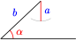
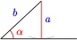
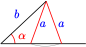
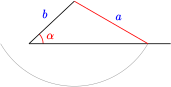

Section 3.3 The Law of Cosines
If we know two angles and one side of a triangle, we can use the Law of Sines to solve the triangle. We can also use the Law of Sines when we know two sides and the angle opposite one of them. But the Law of Sines is not helpful for the problem that opened this chapter, finding the distance from Avery to Clio. In this case we know two sides of the triangle, \(a\) and \(c\text{,}\) and the included angle, \(B\text{.}\)
To solve a triangle when we know two sides and the included angle, we will need a generalization of the Pythagorean theorem known as the Law of Cosines.
In a right triangle, with \(C = 90\degree\text{,}\) the Pythagorean theorem tells us that
If we allow angle \(C\) to vary, but keep \(a\) and \(b\) the same length, the side \(c\) will grow or shrink, depending on whether we increase or decrease the angle \(C\text{,}\) as shown below.
The Pythagorean theorem is actually a special case of a more general law that applies to all triangles, no matter what the size of angle \(C\text{.}\) The equation relating the three sides of a triangle is
You can see that when \(C\) is a right angle, \(\cos 90\degree = 0\text{,}\) so the equation reduces to the Pythagorean theorem.
We can write similar equations involving the angles or \(A\) or \(B\text{.}\) The three equations are all versions of the Law of Cosines.
Law of Cosines.
If the angles of a triangle are \(A, B\text{,}\) and \(C\text{,}\) and the opposite sides are respectively \(a, b,\) and \(c\text{,}\) then
Note 3.37.
For a proof of the Law of Cosines, see Homework Problems 57 and 58.
Subsection Finding a Side
Now we can solve the problem of the distance from Avery to Clio. Here is the figure from Section 3.1 showing the location of the three towns.

Example 3.38.
How far is it from Avery to Clio?
The angle \(\angle ABC = 35\degree + 90\degree = 125\degree\text{.}\) Thus, in \(\triangle ABC\) we have \(a = 34,~ c = 48\) and \(B = 125\degree\text{.}\) The distance from Avery to Clio is represented by \(b\) in the figure.
We know two sides and the included angle, and we choose the version of the Law of Cosines that uses our known angle, \(B\text{.}\)
Avery is about 73 miles from Clio.
Caution 3.39.
When simplifying the Law of Cosines, be careful to follow the order of operations. In the previous example, the right side of the equation
has three terms, and simplifies to
Note that 3264 is the coefficient of \(\cos 125\degree\text{,}\) so it would be incorrect to subtract 3264 from 3460. If you are using a graphing calculator, you can enter the right side of the equation exactly as it is written.
Checkpoint 3.40.
In \(\triangle ABC\text{,}\) \(a = 11,~c = 23\text{,}\) and \(B = 87\degree\text{.}\) Find \(b\text{,}\) and round your answer to two decimal places.
24.97
Subsection Finding an Angle
We can also use the Law of Cosines to find an angle when we know all three sides of a triangle. Pay close attention to the algebraic steps used to solve the equation in the next example.
Example 3.41.
In the triangle at right, \(a = 6,~ b = 7\text{,}\) and \(c = 11\text{.}\) Find angle \(C\text{.}\)
We choose the version of the Law of Cosines that uses angle \(C\text{.}\)
Angle \(C\) is about \(115.4\degree\text{.}\)
Checkpoint 3.42.
In \(\triangle ABC\text{,}\) \(a = 5.3,~b = 4.7\text{,}\) and \(c = 6.1\text{.}\) Find angle \(B\text{,}\) and round your answer to two decimal places.
\(48.07\degree\)
Once we have calculated one of the angles in a triangle, we can use either the Law of Sines or the Law of Cosines to find a second angle. Here is how we would use the Law of Sines to find angle \(A\) in the previous example.
Thus, \(A = \sin^{-1}(0.4928) = 29.5\degree\text{.}\) (We know that \(A\) is an acute angle because it is opposite the shortest side of the triangle.) Finally,
Alternatively, we can use the Law of Cosines to find angle \(A\text{.}\)
Note 3.43.
Using the Law of Sines requires fewer calculations than the Law of Cosines, but the Law of Cosines uses only the original values, instead of the results of our previous calculations and approximations.
Whenever we round off a number, we introduce inaccuracy into the calculations, and these inaccuracies grow with each additional calculation. Thus, for the sake of accuracy, it is best to use given values in preference to calculated values whenever possible.
Subsection Using the Law of Cosines for the Ambiguous Case
In Section 3.2 we encountered the ambiguous case:
If we know two sides \(a\) and \(b\) of a triangle and the acute angle \(\alpha\) opposite one of them, there may be one solution, two solutions, or no solution, depending on the size of \(a\) in relation to \(b\) and \(\alpha\text{,}\) as shown below.
The Ambiguous Case.
-
No solution: \(a \lt b \sin \alpha\)
\(\alpha\) is too short to make a triangle.
-
One solution: \(a = b \sin \alpha\)
\(\alpha\) is exactly the right length to make a right triangle.
-
Two solutions: \(b \sin \alpha \lt a \lt b\)
 -
One solution: \(a \gt b\)

If \(\alpha\) is an obtuse angle, things are simpler: there is one solution if \(a \gt b\text{,}\) and no solution if \(a \le b\text{.}\)
Because there are always two angles with a given sine, if we use the Law of Sines for the ambiguous case, we must check whether both possible angles result in a triangle. But here is another approach: We can apply the Law of Cosines to find the third side first. With that method, we'll need the quadratic formula.
Quadratic Formula.
The solutions of the quadratic equation \(ax^{2} + bx + c = 0,~~a \not= 0,\) are given by
A quadratic equation can have one solution, two solutions, or no solution, depending on the value of the discriminant, \(b^{2} - 4ac\text{.}\) If we use the Law of Cosines to find a side in the ambiguous case, the quadratic formula will tell us how many triangles have the given properties.
- If the quadratic equation has one positive solutions, there is one triangle.
- If the quadratic equation has two positive solutions, there are two triangles.
- If the quadratic equation has no positive solutions, there is no triangle with the given properties.
Example 3.44.
In \(\triangle ABC,~ B = 14.4\degree,~ a = 8\text{,}\) and \(b = 3\text{.}\) Solve the triangle.
We begin by finding the third side of the triangle. Using the Law of Cosines, we have
Because there are two positive solutions for side \(c\text{,}\) either \(c = 5.503\) or \(c = 9.994\text{,}\) there are two triangles with the given properties. We apply the Law of Cosines again to find angle \(C\) in each triangle.
For the triangle with \(c = 5.503\text{,}\) we have
and \(A = 180\degree - (14.4\degree + 27.1\degree) = 138.5\degree\text{.}\)
For the triangle with \(c = 9.994\text{,}\) we have
and \(A = 180\degree - (14.4\degree + 124.1\degree) = 41.5\degree\text{.}\) Both triangles are shown below.
Note 3.45.
In the previous example, notice that we used the Law of Cosines instead of the Law of Sines to find a second angle in the triangle, because there is only one angle between \(0\degree\) and \(180\degree\) with a given cosine. We don't have to check the results, as we would if we used the Law of Sines.
Checkpoint 3.46.
Use the Law of Cosines to find all triangles \(ABC\) with \(A = 48\degree,~ a = 10\text{,}\) and \(b = 15\text{.}\)
No solution
Subsection Navigation
Even with the aid of GPS (Global Positioning System) instruments, aircraft pilots and ship captains need to understand navigation based on trigonometry.
Example 3.47.
The sailing club leaves the marina on a heading \(15\degree\) east of north and sails for 18 miles. They then change course, and after traveling for 12 miles on a heading \(35\degree\) east of north, they experience engine trouble and radio for help. The marina sends a speed boat to rescue them. How far should the speed boat go, and on what heading?
We'd like to find the distance \(x\) and the angle \(\theta\) shown in the figure. In \(\triangle ABC\text{,}\) we can calculate the angle at point \(B\) where the sailing club changed course:
We know \(a = 12\) and \(c = 18\text{.}\) We use the Law of Cosines to find \(b\) and \(\angle A\text{.}\)
Next, we apply the Law of Cosines again to find \(\angle A\text{.}\)
Thus, \(x = 29.56\) and \(\theta = 8\degree + 15\degree = 23\degree\text{.}\) The speed boat should travel 29.56 miles on a heading \(23\degree\) east of north.
Checkpoint 3.48.
Howard wants to fly from Anchorage to Nome, Alaska, a distance of 540 miles on a heading \(57\degree\) west of north. After flying for some time, he discovers that his heading is in error, and he is actually flying \(47\degree\) west of north. Howard corrects his flight plan and changes course when he is exactly 200 miles from Anchorage. What is his new heading, and how far is he from Nome?
\(62.8\degree\) west of north, 344.8 miles
Subsection Which Law to Use
How can we decide which law, the Law of Sines or the Law of Cosines, is appropriate for a given problem?
- If we are solving a right triangle, we don't need the Laws of Sines and Cosines; all we need are the definitions of the trigonometric ratios.
- But for oblique triangles, we can identify the following cases:
How to Solve an Oblique Triangle.
| If we know: | We can use: |
| 1. One side and two angles (SAA) | 1. Law of Sines, to find another side |
| 2. Two sides and the angle opposite one of them (SSA, the ambiguous case) |
2. Law of Sines, to find another angle, or Law of Cosines, to find another side |
| 3. Two sides and the included angle (SAS) |
3. Law of Cosines, to find the third side |
| 4. Three sides (SSS) | 4. Law of Cosines, to find an angle |
Note 3.49.
In the ambiguous case, SSA, the Law of Sines is easier to apply, but there will be two possible angles, and we must check each angle to see if it produces a solution. Using the Law of Cosines involves solving a quadratic equation, but each positive solution of the equation yields a solution of the triangle.
Example 3.50.
In the triangle at right, which law should you use to find \(\angle B\) ? Which law should you use to find \(c\) ?
We know two sides of the triangle and the angle opposite one of them. We can use the Law of Sines to find \(\angle B\text{.}\)
This is the ambiguous case; there are two angles between \(0\degree\) and \(180\degree\) with sine \(0.3857\text{,}\) and we must check each angle to see if it produces a solution.
If instead we start by finding side \(c\text{,}\) we use the Law of Cosines.
You can check that the quadratic equation has only one positive solution for \(c\) (or notice that because \(a \gt b\text{,}\) angle \(B\) must be acute).
Checkpoint 3.51.
In the triangle at right, which part of the triangle can you find, and which law should you use?
We first find side \(c\) using the Law of Cosines
Subsection Algebra Refresher
Review the following skills you will need for this section.
Exercises Exercises
Solve each quadratic equation.
1.
\(2.5x^{2} + 6.2 = 816.2\)
2.
\(0.8x^{2} - 124 = 376\)
3.
\(2x(2x - 3) = 208\)
4.
\(3x(x + 5) = 900\)
5.
\(2x^{2} - 6x = 233.12\)
6.
\(0.5x^{2} + 1.5x = 464\)
Subsection Answers to Algebra Refresher
- \(\displaystyle \pm 8\)
- \(\displaystyle \pm 25\)
- \(\displaystyle 8,~ -6.5\)
- \(\displaystyle 15,~ -20\)
- \(\displaystyle 12.4,~ -9.4\)
- \(\displaystyle 29,~ -32\)
Subsection Section 3.3 Summary
Subsubsection Vocabulary
- Quadratic equation
- Quadratic formula
- Discriminant
Subsubsection Concepts
- The Law of Sines is not helpful when we know two sides of the triangle and the included angle. In this case we need the Law of Cosines.
Law of Cosines.
If the angles of a triangle are \(A, B\text{,}\) and \(C\text{,}\) and the opposite sides are respectively \(a, b,\) and \(c\text{,}\) then
\begin{gather*} a^{2} = b^{2} + c^{2} - 2bc \cos A\\ b^{2} = a^{2} + c^{2} - 2ac \cos B\\ c^{2} = a^{2} + b^{2} - 2ab \cos C \end{gather*}- We can also use the Law of Cosines to find an angle when we know all three sides of a triangle.
- We can use the Law of Cosines to solve the ambiguous case.
How to Solve an Oblique Triangle.
If we know: We can use: 1. One side and two angles (SAA) 1. Law of Sines, to find another side 2. Two sides and the angle opposite
one of them (SSA, the ambiguous
case)2. Law of Sines, to find another angle,
or Law of Cosines, to find another
side3. Two sides and the included angle
(SAS)3. Law of Cosines, to find the third
side4. Three sides (SSS) 4. Law of Cosines, to find an angle
Subsubsection Study Questions
- The Law of Cosines is really a generalization of what familiar theorem?
- If you know all three sides of a triangle and one angle, what might be the advantage in using the Law of Cosines o find another angle, instead of the Law of Sines?
- State the quadratic formula from memory. Try to sing the quadratic formula to the tune of "Pop Goes the Weasel."
- Francine is solving a triangle in which \(a = 20,~ b = 16\text{,}\) and \(A = 26\degree\text{.}\) She finds that \(\sin B = 0.3507\text{.}\) How does she know that \(B = 20.5\degree\text{,}\) and not \(159.5\degree\text{?}\)
Subsubsection Skills
- Use the Law of Cosines to find the side opposite an angle #7-12
- Use the Law of Cosines to find an angle #13-20
- Use the Law of Cosines to find a side adjacent to an angle #21-26
- Decide which law to use #27-34
- Solve a triangle #35-42
- Solve problems using the Law of Cosines #43-56
Exercises Homework 3.3
1.
- Simplify \(~~5^2 + 7^2 - 2(5)(7)\cos \theta\)
- Evaluate the expression in part (a) for \(\theta = 29\degree\)
- Evaluate the expression in part (a) for \(\theta = 151\degree\)
2.
- Simplify \(~~26.1^2 + 32.5^2 - 2(26.1)(32.5)\cos \phi\)
- Evaluate the expression in part (a) for \(\phi = 64\degree\)
- Evaluate the expression in part (a) for \(\phi = 116\degree\)
3.
- Solve \(~~b^2 = a^2 + c^2 - 2ac \cos \beta~~\) for \(~~ \cos \beta\)
- For the equation in part (a), find \(\cos \beta\) if \(a = 5,~ b = 11\text{,}\) and \(c = 8\text{.}\)
4.
- Solve \(~~a^2 = b^2 + c^2 - 2bc \cos \alpha~~\) for \(~~ \cos \alpha\)
- For the equation in part (a), find \(\cos \alpha\) if \(a = 4.6,~ b = 7.2\text{,}\) and \(c = 9.4\text{.}\)
5.
- The equation \(~~9^2 = b^2 + 4^2 - 2b(4) \cos \alpha~~\) is quadratic in \(b\text{.}\) Write the equation in standard form.
- Solve the equation in part (a) for \(b\) if \(\alpha = 48\degree\text{.}\)
6.
- The equation \(~~5^2 = 6^2 + c^2 - 2(5)c \cos \beta~~\) is quadratic in \(c\text{.}\) Write the equation in standard form.
- Solve the equation in part (a) for \(c\) if \(\beta = 126\degree\text{.}\)
For Problems 7–12, use the Law of Cosines to find the indicated side. Round to two decimal places.
7.
8.
9.
10.
11.
12.
For Problems 13–16,use the Law of Cosines to find the indicated angle. Round to two decimal places.
13.
14.
15.
16.
For Problems 17–20, find the angles of the triangle. Round answers to two decimal places.
17.
\(a = 23,~ b = 14,~ c = 18\)
18.
\(a = 18,~ b = 25,~ c = 19\)
19.
\(a = 16.3,~ b = 28.1,~ c = 19.4\)
20.
\(a = 82.3,~ b = 22.5,~ c = 66.8\)
For Problems 21–26, use the Law of Cosines to find the unknown side. Round your answers to two decimal places.
21.
22.
23.
24.
25.
26.
For Problems 27–34, which law should you use to find the labeled unknown value, the Law of Sines or the Law of Cosines? Write an equation you can solve to find the unknown value. For Problems 31-34, you may need two steps to find the unknown value.
27.
28.
29.
30.
31.
32.
33.
34.
For Problems 35–42,
- Sketch and label the triangle.
- Solve the triangle. Round answers to two decimal places.
35.
\(B = 47\degree,~a = 23,~ c = 17\)
36.
\(C = 32\degree, ~a = 14,~ b = 18\)
37.
\(a = 8,~ b =7,~ c = 9\)
38.
\(a = 23,~ b = 34,~ c = 45\)
39.
\(b = 72,~ c = 98,~ B = 38\degree\)
40.
\(a = 28,~ c = 41,~A = 27\degree\)
41.
\(c =5.7,~A = 59\degree,~B = 82\degree\)
42.
\(b = 82,~ A = 11\degree,~C = 42\degree\)
For Problems 35–42,
- Sketch and label a triangle to illustrate the problem.
- Solve the problem. Round answers to one decimal place.
43.
A surveyor would like to know the distance \(PQ\) across a small lake, as shown in the figure. She stands at point \(O\) and measures the angle between the lines of sight to points \(P\) and \(Q\) at \(76\degree\text{.}\) She also finds \(OP = 1400\) meters and \(OQ = 600\) meters. Calculate the distance \(PQ\text{.}\)
44.
Highway engineers plan to drill a tunnel through Boney Mountain from \(G\) to \(H\text{,}\) as shown in the figure. The angle at point \(F\) is \(41\degree\text{,}\) and the distances to \(G\) and \(H\) are 900 yards and 2500 yards, respectively. How long will the tunnel be?
45.
Two pilots leave an airport at the same time. One pilot flies \(3\degree\) east of north at a speed of 320 miles per hour, the other flies \(157\degree\) east of north at a speed of 406 miles per hour. How far apart are the two pilots after 3 hours? What is the heading from the first plane to the second plane at that time?
46.
Two boats leave port at the same time. One boat sails due west at a speed of 17 miles per hour, the other powers \(42\degree\) east of north at a speed of 23 miles per hour. How far apart are the two boats after 2 hours? What is the heading from the first boat to the second boat at that time?
47.
Caroline wants to fly directly south from Indianapolis to Cancun, Mexico, a distance of 1290 miles. However, to avoid bad weather, she flies for 400 miles on a heading \(18\degree\) east of south. What is the heading to Cancun from that location, and how far is it?
48.
Alex sails 8 miles from Key West, Florida on a heading \(40\degree\) east of south. He then changes course and sails for 10 miles due east. What is the heading back to Key West from that point, and how far is it?
49.
The phone company wants to erect a cell tower on a steep hill inclined \(26\degree\) to the horizontal. The installation crew plans to run a guy wire from a point on the ground 20 feet uphill from the base of the tower and attach it to the tower at a height of 100 feet. How long should the guy wire be?
50.
Sandstone Peak rises 3500 above the desert. The Park Service plans to run an aerial tramway up the north face, which is inclined at an angle of \(68\degree\) to the horizontal. The base station will be located 500 feet from the foot of Sndstone Peak. Ignoring any slack in the cable, how long should it be?
51.
The sides of a triangle are 27 cm, 15 cm, and 20 cm. Find the area of the triangle. (Hint: Find one of the angles first.)
52.
The sides of a parallelogram are 10 inches and 8 inches, and form an angle of \(130\degree\text{.}\) Find the lengths of the diagonals of the parallelogram.
For Problems 53–56, find \(x\text{,}\) the distance from one vertex to the foot of the altitude.
53.
54.
55.
56.
Problems 57 and 58 prove the Law of Cosines.
57.
- Copy the three figures above showing the three possibilities for an angle \(C\) in a triangle: \(C\) is acute, obtuse, or a right angle. For each figure, explain why it is true that \(c^2 = (b - x)^2 + y^2\text{,}\) then rewrite the right side to get \(c^2 = (x^2 + y^2) + b^2 - 2bx\text{.}\)
- For each figure, explain why it is true that \(x^2 + y^2 = a^2\text{.}\)
- For all three figures, \(a\) is the distance from the origin to the point \((x,y)\text{.}\) Use the definition of cosine to write \(\cos C\) in terms of \(a\) and \(x\text{,}\) then solve your equation for \(x\text{.}\)
- Start with the last equation from (a), and substitute expressions from (b) and (c) to conclude one case of the Law of Cosines.
58.
Demonstrate the other two cases of the Law of Cosines:
- \(\displaystyle a^2 = b^2 + c^2 - 2bc \cos A\)
- \(\displaystyle b^2 = a^2 + c^2 - 2ac \cos B\)
(Hint: See Problem 57 and switch the roles of \(a\) and \(c\text{,}\) etc.)
59.
Use the Law of Cosines to prove the projection laws:
Illustrate with a sketch. (Hint: Add together two of the versions of the Law of Cosines.)
60.
If \(\triangle ABC\) is isosceles with \(a = b\text{,}\) show that \(c^2 = 2a^2(1 - \cos C)\text{.}\)
61.
Use the Law of Cosines to prove:
62.
Prove that